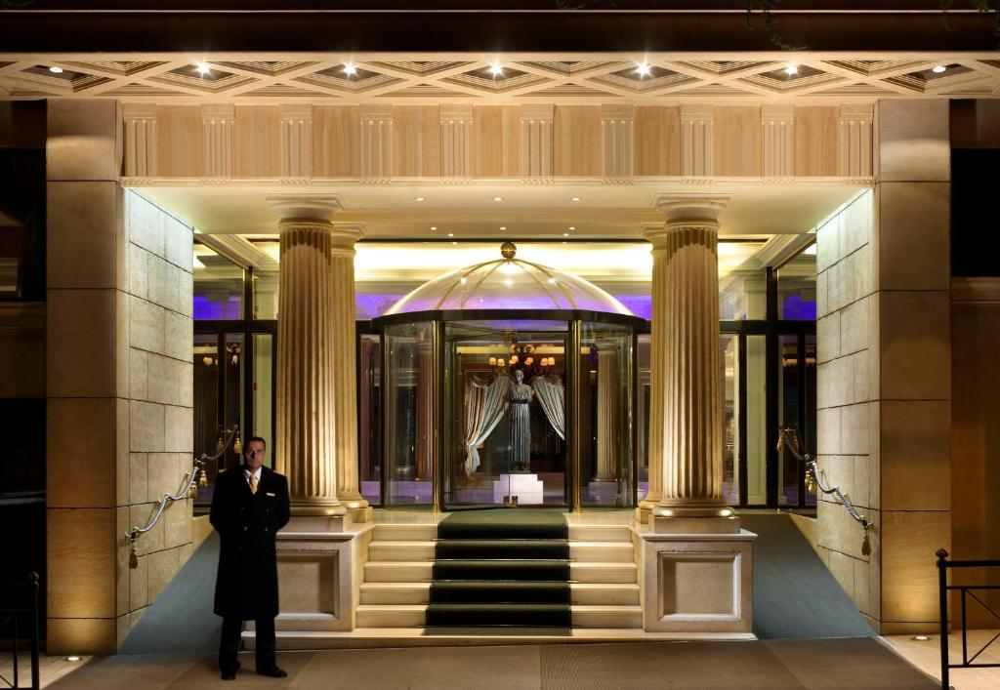
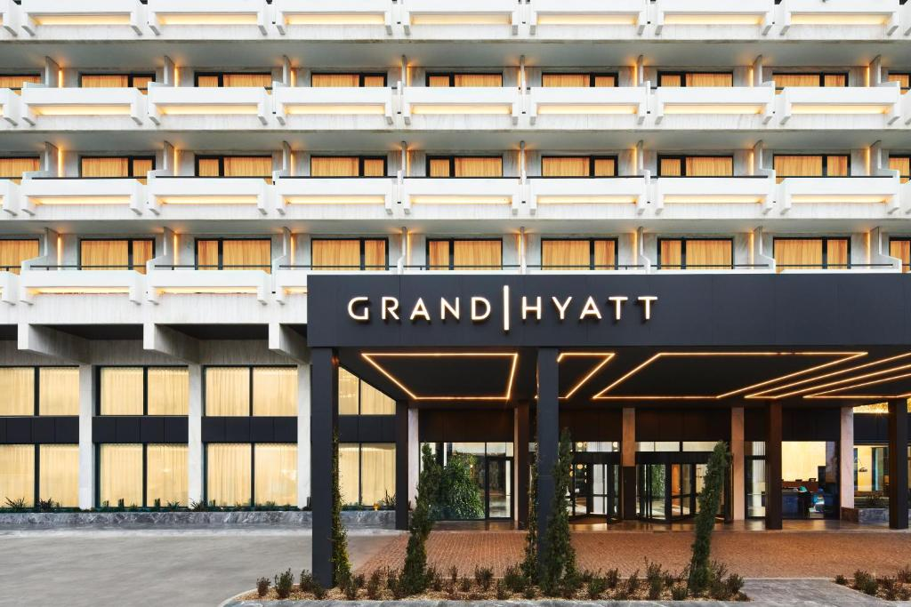
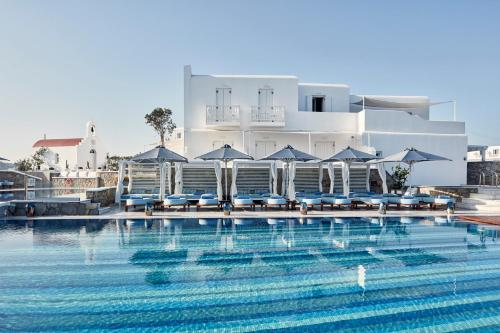

ATHENES Royal Olympic *****
En plein centre-ville d'Athènes, au cœur du quartier animé de Psiri se trouve l'hôtel Arion, un
établissement à taille humaine, accueillant et confortable.. Les 51 chambres sont claires et cosy et
en
ce qui concerne les parties communes, vous pouvez compter sur un bar sympathique où prendre cafés ou
cocktails, une salle à manger où est servi le copieux petit déjeuner et un mémorable rooftop
végétalisé,
offrant une vue merveilleuse sur le Parthénon.

ATHENES Grand Hyatt *****
Séjournez dans le fabuleux hôtel Athens Coast, cet hôtel moderne est situé dans le quartier de
Glyfada. Les 63 chambres sont modernes et lumineuses, vous pourrez également profiter de la superbe
piscine et vous promener dans les alentours pour découvrir cette autre partie d'Athènes.

MYKONOS Myconian Kyrma *****
Bénéficiez d'un emplacement central au cœur de Delphes en séjournant au Parnassos Delphi Hotel.
Il est situé à seulement 400m des célèbres sites de fouille archéologique de Delphes.
L'établissement dispose de 30 chambres, dont 3 suites. Son hall d'accueil chaleureux abrite une
réception, un ascenseur, un bar, un restaurant à la carte. Au célèbre restaurant de l'hôtel,
l'Epikouros, vous pourrez déguster une variété de plats grecs et méditerranéens raffinés.
